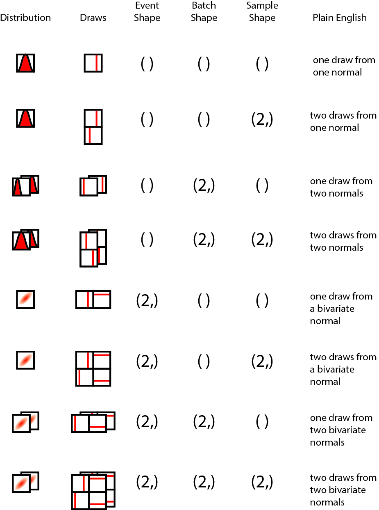

Bone Marrow Donations
personal charity leukemia donations blood donation community service
A friend of mine just reached out to me, saying that he’s been diagnosed with leukemia. Thankfully, he’s not subject to the abysmal state of US healthcare (as he lives in a place where healthcare coverage is great), and so he’s on treatment, progressing, and hopefully has a great shot at beating this cancer.
He definitely knows how to speak to a data scientist: using data. The odds of a match for a patient who needs a bone marrow transplant are 500:1. That means on average, only about 1 donor in 500 will be a match. On the other hand, under certain assumptions, every 500 donors who registers will mean one life, on average, can be saved. I did some digging myself: According to the US Health Resources and Services Administration, nearly every single minority ethnic group is underrepresented in donor registry databases.
As things turn out, signing up to be a donor is quite lightweight. Genetic information - specifically, only Human Leukocyte Antigen (HLA) type - is needed, and that can be obtained in a non-invasive fashion. If a match is found, the donor still has the option to withdraw if they have any objections. As such, the process is completely voluntary for the donor. There are two types of donations possible: peripheral blood stem cells (PBSC) and bone marrow, with PBSC donations being lightweight and bone marrow donations being more involved. Digging a bit deeper, it seems like the only sacrifice a donor has to make is that of time and some discomfort.
I’m putting this blog post up as a reminder to myself to register, and to encourage others to do so as well. If you’re in the United States, Be The Match is the organization to get in touch with; if you’re from my home country of Canada, the Canadian Blood Services manages the process.
Did you enjoy this blog post? Let's discuss more!
Graphs and Matrices
graphs network science data science
Once again, I’m reminded through my research how neat and useful it is to be able to think of matrices as graphs and vice-versa.
I was constructing a symmetric square matrix of values, in which multiple cells of the matrix were empty (i.e. no values present). (Thankfully, the diagonal is guaranteed dense.) From this matrix, I wanted the largest set of rows/columns that formed a symmetric, densely populated square matrix of values, subject to a second constraint that the set of rows/columns also maximally intersected with another set of items.
Having thought about the requirements of the problem, my prior experience with graphs reminded me that every graph has a corresponding adjacency matrix, and that finding the densest symmetric subset of entries in the matrix was equivalent to finding cliques in a graph! My intern and I proceeded to convert the matrix into its graph representation, and a few API calls in networkx later, we found the matrix we needed.
The key takeaway from this experience? Finding the right representation for a problem, we can computationally solve them quickly by using the appropriate APIs!
Did you enjoy this blog post? Let's discuss more!
Mobile Working on the iPad
A few years ago, I test-drove mobile work using my thesis as a case study, basically challenging myself with the question: how much of my main thesis paper could I write on iOS (specifically, an iPad Mini)? Back then, iOS turned out to be a superb tool for the writing phase (getting ideas into a text editor), and a horrible one for final formatting before submitting a paper to a journal (inflexible). Now, don’t get me wrong, though - I would still use it as part of my workflow if I were to do it again!
Fast-forward a few years, I now do more programming in a data science context than I do formal writing, and the tooling for software development and data analysis on iOS has improved greatly. I thought I’d challenge myself with an experiment: how much of development and analytics could I do on an iPad, especially the Mini?
This time round, armed with an iPad Pro (11”), I decided to test again how much one can do on iOS, once again.
Software Development
I develop pyjanitor as a tool that I use in my daily work, and as part of my open source software portfolio. When I’m on my MacBook or Pro, or on my Linux desktop at home, I usually work with VSCode for it’s integrated terminal, superb syntax highlighting, git integration, code completion with Kite, and more.
Moving to iOS, VSCode is not available, and that immediately means to rely on Terminal-based tools to get my work done. I ponied up for Blink Shell, and found it to pay off immediately. Having enabled remote access on my Linux tower at home, I was thrilled to learn that Blink supports mosh, and when paired with tmux, it is a superb solution for maintaining persistent shells across spotty internet conditions.
A while ago, I also configured nano with syntax highlighting. As things turned out, syntax highlighting has the biggest effect on my productivity compared to other text editor enhancements (e.g. code completion, git integration, etc.). After I mastered most of nano's shortcut keys, I found I could be productive at coding in just nano itself. Even though missing out on the usual assistive tools meant I was coding somewhat slower, the pace was still acceptable; moreover, relying less on those tools helped me develop a muscle memory for certain API calls. I also found myself becoming more effective because the single window idioms of iOS meant I was focusing on the programming task at hand, rather than getting distracted while looking at docs in a web browser (a surprisingly common happening for me!).
Data Analysis
For data analysis, Jupyter notebooks are the tool of my choice, for their interactive nature, and the ability to weave a narrative throughout the computation. Jupyter Lab is awesome for this task, but it’s poorly supported on mobile Safari. To use Jupyter notebooks in iOS, the best offering at the moment is Juno, with its ability to connect to a Jupyter server accessible through an IP address or URL. This does require payment, though, and I gladly ponied up for that as well.
I run a Jupyter server on my Linux tower at home. Because it has a GPU installed on it, when I am accessing the machine through Juno, my iPad suddenly has access to a full-fledged, fully-configured GPU as part of the compute environment! Coupled with the responsiveness of Juno, this makes for a fairly compelling setup to do Python programming on an iPad.
Pros and Cons of iPad Mini-based Development
Cons
Overall, the experience has been positive, but there have been some challenges, which I would like to detail here.
Remote server required: Firstly, because we are essentially using the iPad as a thin client to a remote server, one must either pay for a remote development server in the cloud, or go through the hassle of setting up a development machine that one can SSH into. This may turn off individuals who either are loathe to rent a computer, or don’t have the necessary experience to setup a remote server on their own.
iOS Multi-Windowing: It’s sometimes non-trivial to check up source code or function signatures (API docs, really) on the sidebar browser window in iOS. Unlike macOS, in which I have a number of shortcut keys that will let me launch and/or switch between apps, the lack of this capability on iOS means I find myself slowed down because I have to use a bunch of swiping gestures to get to where I need to be. (Cmd-tab seems to be the only exception, for it activates the app switcher, but the number of apps in the app switcher remembers is limited.)
Pros
Even with the issues detailed above, there’s still much to love about doing mobile development work on an iOS device.
iOS Speed: On the latest hardware, iOS is speedy. Well, even that is a bit of an understatement. I rarely get lags while typing in Blink and Juno, and even when I do, I can usually pin it down to network latency more than RAM issues.
Focus: This is the biggest win. Because iOS makes it difficult to switch contexts, this is actually an upside for work that involves creating things. Whether it’s someone who is drawing, producing videos, editing photos, writing blog posts, or creating code, the ability to focus on the context at hand is tremendous for producing high quality work. Here, iOS is actually a winner for focused productivity.
Mobility: The second upside would be that of battery life, and hence mobility, by extension. My 12” MacBook is super mobile, yes, but macOS appears to have issues restraining battery drainage when the lid is closed. By contrast, iOS seems to have fewer issues with this. The battery life concerns mean I’m carrying my mouse, charger and dongle with me all the time, and I’ll get the equivalent of range anxiety when I take only my laptop.
Keyboard Experience: The keyboard experience on the Smart Keyboard Folio is surprisingly good! It’s tactile, and is fully covered, so we won’t have issues arise due to dust getting underneath the keys, like my little MacBook had.
Concluding Thoughts
This test has been quite instructive. As usual, tooling is superbly important for productivity; investing in the right tools makes it worthwhile. Granted, none of this comes cheap or for free, naturally. Given the future directions of iOS, I think it’s shaping up to be a real contender for productivity!
Did you enjoy this blog post? Let's discuss more!
Reasoning about Shapes and Probability Distributions
bayesian probabilistic programming tensors data science probability distributions
I’m here with the PyMC4 dev team and Tensorflow Probability developers Rif, Brian and Chris in Google Montreal, and have found the time thus far to be an amazing learning opportunity.
Prior to this summit, it never dawned on me how interfacing tensors with probability distributions could be such a minefield of overloaded ideas and terminology. Yet, communicating clearly about tensors is important, because if problems can be cast into a tensor-space operation, vectorization can help speed up many operations that we wish to handle. I wanted to share a bit about something new about tensors that I learned here: the different types of shapes involved in a probabilistic programming language.
Let’s start by thinking about a few questions involving the most venerable distribution of them all: the Gaussian, also known as the Normal distribution.
Let’s start by thinking about a single draw from a standard Gaussian. Drawing one number from the standard Gaussian yields a scalar. In tensor space, a scalar is a rank 0 tensor, and this colloquially means that there’s no dimensions involved. If we drew out the distribution, and drew out the process of drawing numbers from the distribution, it might look like the following:

The distribution we are drawing from is on the left, and a draw is represented by a line (on the same numerical axis as the probability distribution), and the event shape, batch shape and sample shape shown to their right, followed by a "plain English" description. Over the course of this blog post, the shape concepts will be disambiguated; sit tight and enjoy the ride!
What if we were to draw two numbers from this one Gaussian? We could use a vector with two slots to represent those draws. This might look like the following:

However, the elementary event of drawing a single number did not fundamentally change when we drew two numbers, as we merely repeated the same event to draw two. With my hands waving in the air, I will claim that this holds true even with K samples drawn from the distribution.
Now, what if I had a second Gaussian, say, with a different mean and/or variance? If I were to draw one number from the first Gaussian alongside one number from the second Gaussian, and then concatenate them into a vector, we can represent this as us drawing numbers from independent Gaussians. The illustration below should help clarify how this is different from the first.

In this case, we may argue that per distribution, the elementary shape of the event did not change. However, since we have a batch of two distributions, this contributes to the final shape of the tensor. Again, with much waving of my hands in the air, this should extend to more than two distributions.
Now, what if we had a multivariate Gaussian, with two variates? This makes for a very interesting case! The elementary event drawn from this multivariate Gaussian is a two-element vector, not a scalar, which means that its shape is apparently identical to the case where we have a single pair of numbers drawn from a batch of two independent Gaussians! This looks like the following:

This is interesting, because a single draw from a bivariate Gaussian has the same overall shape as two draws from one Gaussian, which also has the same shape as one draw from a batch of two Gaussians. Yet, these apparently same-shaped draws are shaped differently semantically! In particular, the two independent Gaussians individually have elementary event shapes that are scalar, but when drawn as a batch of two, that is when their shape of (2,) forms. On the other hand, the multivariate Gaussian cannot have its two numbers drawn independent of one another (unless this is the special case of diagonal-only covariance - in which case, this is equivalent to independent Gaussians). Hence, the elementary event shape is not scalar, but vector (or more generally, same rank tensor as the mean tensor), but the batch has only a single distribution, hence it has a scalar batch shape.
To summarize, here are the various kinds of shapes, defined:
Event shape: The atomic shape of a single event/observation from the distribution (or batch of distributions of the same family).
Batch shape: The atomic shape of a single sample of observations from one or more distributions of the same family. As an example, we can’t have a batch of a Gaussian and a Gamma distribution together, but we can have a batch of more than one Gaussians.
Sample shape: The shape of a bunch of samples drawn from the distributions.
And finally, here’s the full spread of possibilities, using one or two draws, uni- or bi-variate Gaussians, and one or two batches of distributions as an illustration.

Special thanks goes to fellow PyMC devs, Ravin Kumar, Brandon Willard, Colin Carroll, and Peadar Coyle, who provided feedback on the figure over a late-night tea/dinner/bar session at the end of Day 2.
Why Shapes Matter: Broadcasting
Why do these different shapes matter? Well, it matters most when we are thinking about broadcasting in a semantically-consistent fashion, particularly when considering batches and events. When it comes to implementing a tensor library with probability distributions as first-class citizens, reasoning about these shapes properly can really help with implementing an API that end-users can grok in a reasonable fashion.
Let’s return to the simple case where we have two different types of shape (2,) Gaussians declared: a batch of two Gaussians, and a bivariate Gaussian. One useful thought experiment is to think about the computation of the log probability of a vector of two numbers, X = (x1, x2), where x1 and x2 are not necessarily the same numbers.
In the case of the bivariate Gaussians, how many log probabilities should we return? In this case, it makes semantic sense to return only one number, because in a bivariate Gaussian, the two numbers could not have been drawn independent of each other, and hence the log probability has to be computed with consideration to the full joint distribution.
In the case of the batch of two Gaussians, how many log probabilities should we return? Is it one number, or is it two? Semantically, it makes sense to return two numbers, because we are evaluating x1 against the first Gaussian, and x2 against the second Gaussian in the batch of Gaussians. Most crucially, this differs from the bivariate case, because by structuring our Gaussians in a batch, we are essentially declaring our intent to evaluate their log probabilities independent of each other.
Borrowing from the above master figure, here's the a figure that shows how likelihood computations happen:

To compute the likelihood over the data, we multiply the likelihoods of each of the individual data points. You will noticed that essentially, in each case, the dimension we intend to collapse is the sample dimension - and that means keeping track of the sample dimension is extremely important! Also important to note is that we do not intend to collapse the batch dimension, as it does not carry the same statistical meaning as a sample from a distribution, but is a tensor computation construct.
Other Scenarios
There are more scenarios where reasoning about shapes in a semantic manner becomes super important! Here’s a sampling of them, posed as questions and then maybe some suggested answers or further questions.
If I now asked to evaluate the log probability of x1 only, how should broadcasting of x1 happen on the bivariate Gaussian, and on the batch of two Gaussians? Perhaps in this trivial case, it would be tempting to automatically broadcast the same scalar number... but wait! In the case of the bivariate Gaussian, how do we know that the end-user has not forgotten to supply the second number?
If I have a batch of two bivariate Gaussians, hence effectively creating a (batch shape = 2, event shape = 2) vector of bivariate distributions, and I ask to evaluate the log probability of a matrix of values ((x1, x2), (x3, x4)), in which way do we orient the values? Do we assume that (x1, x2) are to be evaluated against the first Gaussian, or (x1, x3) are to be evaluated against the first Gaussian? (We don’t have to worry about (x1, x4), because to the average user, it is unreasonable whichever way we look.)
Both these examples illustrate an inherent difficulty to thinking about tensor shapes without reference to what each of the dimensions mean.
Improving Shape Semantics
What could we do, then, to improve the semantic understandability of tensor shapes?
One solution would be to name tensor axes by what they mean. The xarray project does exactly that! However, it can’t be used in differential computing, because (to the best of my knowledge), there is no automatic differentiation system that works with it.
In addition, there’s namedtensor from Harvard NLP that aims to provide an analogous solution to the problem, though I find it a pity that they chose to implement it against pytorch rather than to create an extension to the idiomatic numpy instead.
The TensorFlow Probability team also has a solution, in which they separate the three types of shapes explicitly, though no naming happens on a per-axis basis.
I think there are great ideas in all three, and when I take a birds-eye view of the scientific computing ecosystem in Python as both a developer and end-user, I’d love to see the NumPy API, which is idiomatic and widely used and built on top of, become aware of each of these types of designs, something akin to NEP-18, the array function dispatching protocol that allows NumPy APIs to be called on other tensor libraries.
Did you enjoy this blog post? Let's discuss more!
Context Switching
programming coding data science
Context switching is hard. I noticed this when I was at the PyCon sprints, where I was bouncing from sprinter to sprinter, trying to give them each the necessary attention to get their chosen sprint tasks done. After a while, it took a toll on my brain, and I started finding it hard to concentrate on the next problem.
Under such circumstances, when one is context switching often (most hopefully out of one's own volition), how do we communicate that we need some ramp-up time, and how can others help us help them?
I think one practical thing that can be done is to frequently communicate on each context switch that context ramp-up is needed. In the future, when I switch contexts, first thing I'm going to ask is something along the lines of, "What context do I need to help me help you?" Or, if I'm lost, I can clearly communicate what I'm missing - if it's context that I'm missing - by stating, "I think I'm missing some context. Can you bring me up to speed?"
At least while sprinting, sprinters can definitely help me help them by providing the necessary context up-front. Perhaps this applies more generally as well: when we're asking someone for help, we may be able to help them out by asking them, "What context from me would help you get up-to-speed here?"
Did you enjoy this blog post? Let's discuss more!